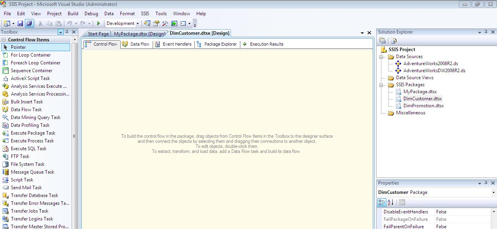
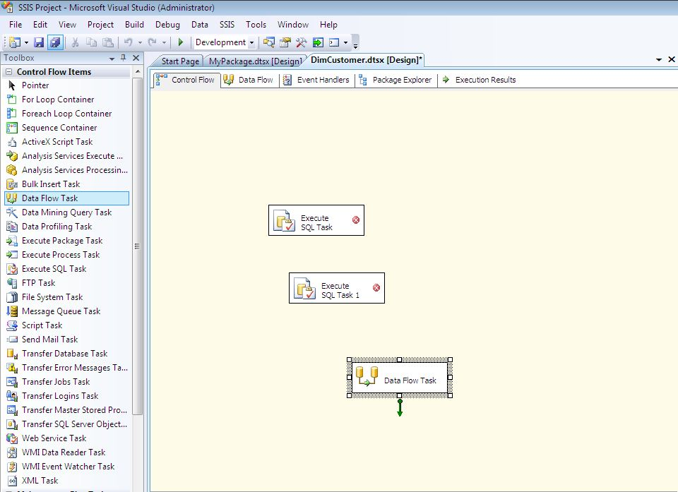
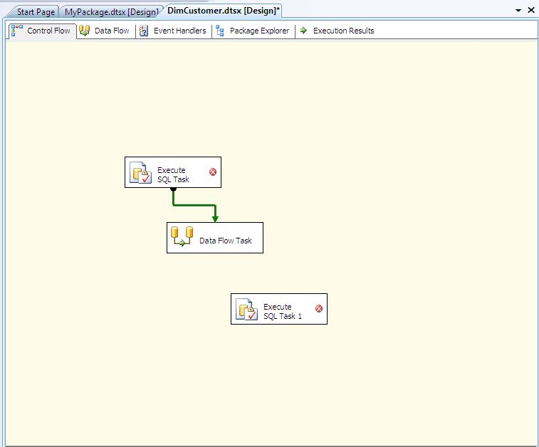
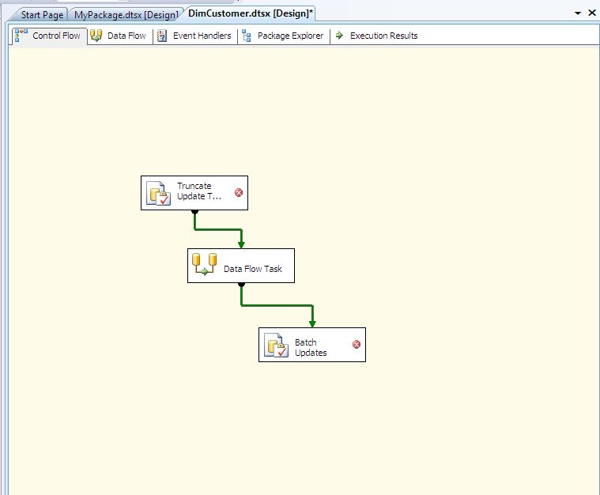
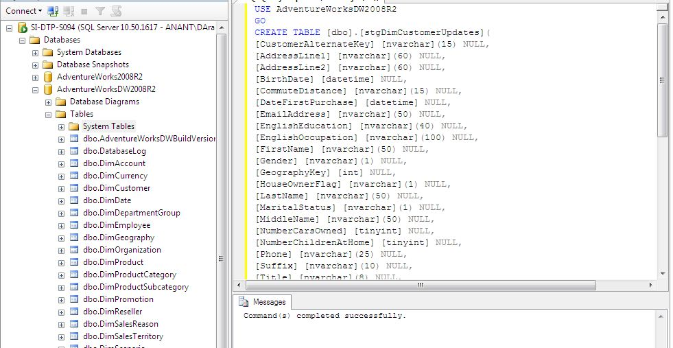
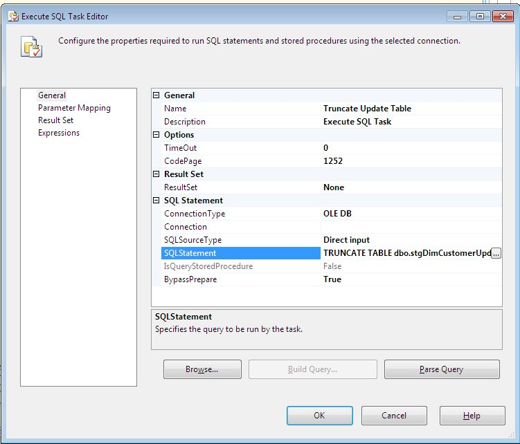
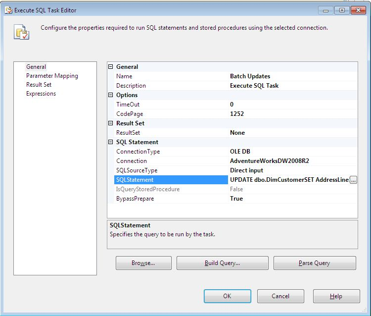

SSIS Exercise 05
SSIS Exercise 05
Modify ETL Package Control Flow
This exercise will allow us to start the process of building the DimCustomer SSIS package that will handle the ETL process from the AdventureWorks2008 database to the AdventureWorks-DW2008 database.
Start SQL Server Business Intelligence Development Studio (BIDS), open the project SSIS Project you created in last exercise here and then open the empty DimCustomer package.

From the toolbox, drag two Execute SQL Tasks onto the control flow workspace and then drag one Data Flow Task onto the workspace.

Now, connect the first Execute SQL Task to the Data Flow Task by dragging the green precedence constraint from the Execute SQL Task onto the Data Flow Task.

Then connect the green precedence constraint from the Data Flow Task to the second Execute SQL Task.
Rename the first Execute SQL Task to Truncate Update Table, and rename the second Execute SQL Task to Batch Updates.

Now, open SSMS, connect to the Database Engine, and create a new query against the AdventureWorksDW2008R2 database. Execute the following code
USE AdventureWorksDW2008R2
GO
CREATE TABLE [dbo].[stgDimCustomerUpdates](
[CustomerAlternateKey] [nvarchar](15) NULL,
[AddressLine1] [nvarchar](60) NULL,
[AddressLine2] [nvarchar](60) NULL,
[BirthDate] [datetime] NULL,
[CommuteDistance] [nvarchar](15) NULL,
[DateFirstPurchase] [datetime] NULL,
[EmailAddress] [nvarchar](50) NULL,
[EnglishEducation] [nvarchar](40) NULL,
[EnglishOccupation] [nvarchar](100) NULL,
[FirstName] [nvarchar](50) NULL,
[Gender] [nvarchar](1) NULL,
[GeographyKey] [int] NULL,
[HouseOwnerFlag] [nvarchar](1) NULL,
[LastName] [nvarchar](50) NULL,
[MaritalStatus] [nvarchar](1) NULL,
[MiddleName] [nvarchar](50) NULL,
[NumberCarsOwned] [tinyint] NULL,
[NumberChildrenAtHome] [tinyint] NULL,
[Phone] [nvarchar](25) NULL,
[Suffix] [nvarchar](10) NULL,
[Title] [nvarchar](8) NULL,
[TotalChildren] [tinyint] NULL,
[YearlyIncome] [nvarchar](100) NULL) ON [PRIMARY]

After the table is created, switch back to the DimCustomer SSIS package and edit the Execute SQL Task named Truncate Update Table.
In the Execute SQL Task Editor dialog box, set the Connection property to Adventure-WorksDW2008R2, and then enter the following SQL code in the SQLStatement property
TRUNCATE TABLE dbo.stgDimCustomerUpdates
Click OK to save it

Edit the last Execute SQL Task, named Batch Updates, and set the Connection property to AdventureWorksDW2008R2
In the SQLStatement property, enter the following UPDATE statement:
UPDATE dbo.DimCustomer
SET AddressLine1 = stgDimCustomerUpdates.AddressLine1
, AddressLine2 = stgDimCustomerUpdates.AddressLine2
, BirthDate = stgDimCustomerUpdates.BirthDate
, CommuteDistance = stgDimCustomerUpdates.CommuteDistance
, DateFirstPurchase = stgDimCustomerUpdates.DateFirstPurchase
, EmailAddress = stgDimCustomerUpdates.EmailAddress
, EnglishEducation = stgDimCustomerUpdates.EnglishEducation
, EnglishOccupation = stgDimCustomerUpdates.EnglishOccupation
, FirstName = stgDimCustomerUpdates.FirstName
, Gender = stgDimCustomerUpdates.Gender
, GeographyKey = stgDimCustomerUpdates.GeographyKey
, HouseOwnerFlag = stgDimCustomerUpdates.HouseOwnerFlag
, LastName = stgDimCustomerUpdates.LastName
, MaritalStatus = stgDimCustomerUpdates.MaritalStatus
, MiddleName = stgDimCustomerUpdates.MiddleName
, NumberCarsOwned = stgDimCustomerUpdates.NumberCarsOwned
, NumberChildrenAtHome = stgDimCustomerUpdates.NumberChildrenAtHome
, Phone = stgDimCustomerUpdates.Phone
, Suffix = stgDimCustomerUpdates.Suffix
, Title = stgDimCustomerUpdates.Title
, TotalChildren = stgDimCustomerUpdates.TotalChildren
FROM dbo.DimCustomer DimCustomer
INNER JOIN dbo.stgDimCustomerUpdates
ON DimCustomer.CustomerAlternateKey = stgDimCustomerUpdates.CustomerAlternateKey
Click OK in the Execute SQL Task Editor dialog box, and then save the package.

You have successfully created an ETL flow.
{kind=link}
{kind=link}
{kind=link}
{kind=link}
{kind=link}
{kind=link}
{kind=link}
{kind=link}